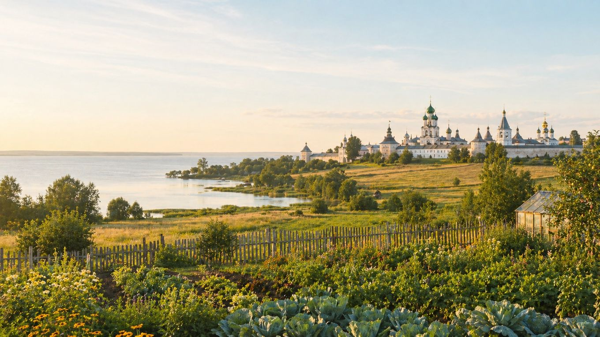

Главная / Ярославская область / южное ополье и озёрный край

Ярославская область · юг и озёра
Что посадить
Что посадить
в южном ополье и озёрном крае
Более тёплая и открытая часть области вокруг Ростова, Переславля и крупных озёр. Почвы часто благодарнее для сада и овощей, но у воды возможны туманы, холодные низины и возвратные заморозки.
Культуры и рекомендации
По умолчанию культуры отсортированы по надёжности: сначала надёжные, затем рекомендованные, с укрытием и рискованные. Сроки ориентировочные — их стоит уточнять по погоде конкретного сезона.
| Культура | Категория | Рекомендация | Где лучше | Сроки | Комментарий |
|---|---|---|---|---|---|
| Вишняплодовое дерево | Плодовые | Надёжно | Защищённый сад | Посадка: апрель или сентябрь. | В южной части области удаётся увереннее, если избегать сырых низин у озёр. |
| Гороховощная бобовая культура | Овощи | Надёжно | Открытый грунт | Посев: конец апреля — май. | Ранний посев позволяет уйти от летней жары и получить стабильный урожай. |
| Жимолостьягодный кустарник | Ягодные | Надёжно | Сад | Посадка: апрель или сентябрь; сбор — июнь. | Надёжно зимует и рано даёт ягоду даже после холодной весны. |
| Кабачоктыквенная культура | Овощи | Надёжно | Открытый грунт | Посев или высадка: конец мая — начало июня. | В южном ополье обычно хватает тепла; важен полив в сухие недели. |
| Капуста белокочаннаяовощная культура | Овощи | Надёжно | Открытый грунт | Рассада: апрель; высадка: май. | Хорошо растёт на плодородных почвах, но в засушливые периоды требует полива. |
| Картофельклубнеплод | Овощи | Надёжно | Открытый грунт | Посадка: май; уборка: август–сентябрь. | Стабилен; на лёгких почвах особенно важна влага в начале клубнеобразования. |
| Крыжовникягодный кустарник | Ягодные | Надёжно | Сад | Посадка: апрель или сентябрь. | Хорошо растёт на светлом месте, но в сухую погоду требует полива. |
| Лук репчатыйовощная культура | Овощи | Надёжно | Открытый грунт | Севок: май; уборка: август. | Лучше удаётся на солнечных сухих грядах, типичных для открытых участков юга области. |
| Малинаягодный кустарник | Ягодные | Надёжно | Сад | Посадка: апрель или сентябрь. | Стабильна при мульчировании и поливе, особенно на открытых ветреных местах. |
| Морковькорнеплод | Овощи | Надёжно | Открытый грунт | Посев: конец апреля — май. | На плодородных рыхлых грядах даёт ровные корнеплоды; посевы держат влажными до всходов. |
| Салат листовойзелёная культура | Зелень | Надёжно | Открытый грунт | Посев: апрель–июнь, повторно — август. | Весной растёт отлично, летом лучше выбирать полутень и регулярный полив. |
| Свёклакорнеплод | Овощи | Надёжно | Открытый грунт | Посев: май, после прогрева почвы. | Надёжная культура для южных огородов; любит питание и прореживание. |
| Смородина чёрнаяягодный кустарник | Ягодные | Надёжно | Сад | Посадка: апрель или сентябрь. | Хороша в садах с умеренной влажностью; в сухие недели нужен полив после цветения. |
| Тыкватыквенная культура | Овощи | Надёжно | Тёплая гряда | Рассада или посев: конец мая — начало июня. | Южная часть области лучше подходит для ранних тыкв, особенно на компостной гряде. |
| Укроппряная зелень | Зелень | Надёжно | Открытый грунт | Посев: апрель–июль, с повторениями. | Легко выращивать повторными посевами; в жару быстрее уходит в зонтик. |
| Яблоняплодовое дерево | Плодовые | Надёжно | Сад | Посадка: апрель или сентябрь. | Одна из основных плодовых культур зоны; важно выбирать районированные сорта. |
| Брокколикапустная культура | Овощи | Рекомендовано | Открытый грунт | Рассада: апрель; высадка: май. | Получается хорошо при ровном поливе; в жаркие периоды может быстрее уходить в цвет. |
| Грушаплодовое дерево | Плодовые | Рекомендовано | Защищённый сад | Посадка: апрель; формировка — ранняя весна. | В южной зоне перспективнее, чем на севере, но место должно быть тёплым и сухим. |
| Земляника садоваяягодная культура | Ягодные | Рекомендовано | Садовая гряда | Посадка: май или август. | Хорошо плодоносит на высокой гряде с мульчей; у озёр важна вентиляция посадок. |
| Облепихаягодный кустарник | Ягодные | Рекомендовано | Солнечный сад | Посадка: апрель или сентябрь. | Любит солнце и дренированную почву; подходит для открытых мест, где хватает света. |
| Огурецтеплолюбивый овощ | Овощи | Рекомендовано | Открытый грунт, на старте — под дугами | Рассада: май; высадка: конец мая — июнь. | В тёплое лето идёт уверенно; временное укрытие помогает пройти холодные ночи. |
| Сливаплодовое дерево | Плодовые | Рекомендовано | Сад | Посадка: апрель или сентябрь. | Хороший вариант для южной зоны при выборе зимостойких сортов и защищённого места. |
| Томаттеплолюбивый овощ | Овощи | Рекомендовано | Открытый грунт, лучше с временным укрытием | Рассада: март; высадка: конец мая — начало июня. | Ранние сорта успевают в открытом грунте; укрытие улучшает старт. |
| Фасоль кустоваяовощная бобовая культура | Овощи | Рекомендовано | Открытый грунт | Посев: конец мая, по тёплой почве. | Южная зона подходит лучше северной, но с посевом не спешат до прогрева почвы. |
| Баклажантеплолюбивый овощ | Овощи | С укрытием / уходом | Теплица | Рассада: февраль–март; высадка: конец мая. | Даёт хороший результат в теплице; в открытом грунте слишком зависит от лета. |
| Виноград укрывнойплодовая лиана | Плодовые | С укрытием / уходом | Тёплая стена или шпалера | Посадка: май; укрытие лозы — октябрь–ноябрь. | Можно пробовать самые ранние сорта у южной стены, обязательно с укрытием на зиму. |
| Дынябахчевая культура | Бахчевые | С укрытием / уходом | Тёплая гряда под укрытием | Рассада: апрель; высадка: конец мая — июнь. | Возможна в удачное лето на тёплой гряде, особенно под плёнкой в начале сезона. |
| Перец сладкийтеплолюбивый овощ | Овощи | С укрытием / уходом | Теплица | Рассада: февраль–март; высадка: конец мая. | Стабильнее всего растёт в теплице или высоком парнике с ровным поливом. |
| Абрикосплодовое дерево | Плодовые | Рискованно | Экспериментальный сад | Посадка: весна; цветение требует защиты от заморозков. | Самые тёплые участки дают шанс, но раннее цветение остаётся большим риском. |
| Арбузбахчевая культура | Бахчевые | Рискованно | Тёплая гряда под укрытием | Рассада: апрель; высадка: конец мая — июнь. | Можно получить отдельные плоды в жаркое лето, но стабильной культурой для зоны не считается. |
| Персикплодовое дерево | Плодовые | Рискованно | Экспериментальный сад | Посадка: весна; зимняя защита обязательна. | Даже в южной части области зимовка и цветение остаются нестабильными. |
По выбранным фильтрам культур не найдено.